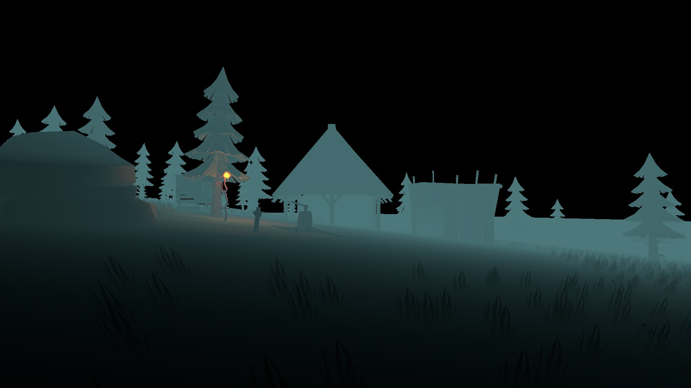
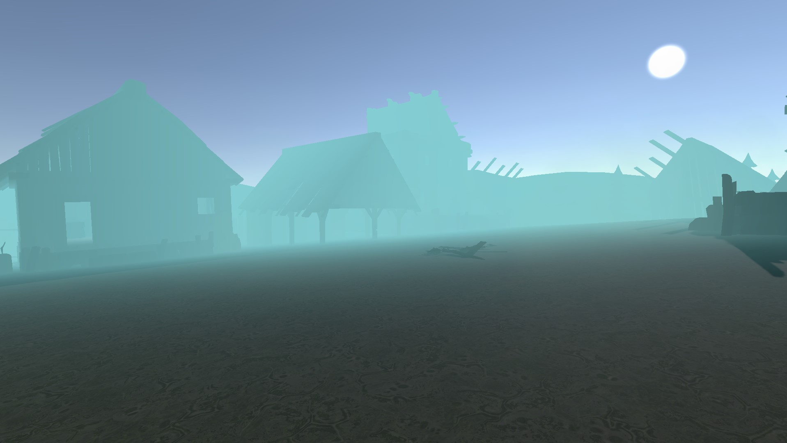

Thématique monde spatialisé
C'est un projet réalisé dans le cadre du cours d'arts numériques au cours de la première année de Master ANCV. Le thème imposé est monde spatialisé. J'ai choisi de réaliser un jeu dans lequel le joueur sera guidé par différents sons pour réaliser des quêtes.
« Je m'appelle Rin.
Chez moi, tout le monde est heureux et moi aussi mais étrangement ils ont tous disparu...
Rien n'est plus comme avant et je ne comprends pas pourquoi.
J'ai peur...
Aide-moi s'il te plaît ! »

